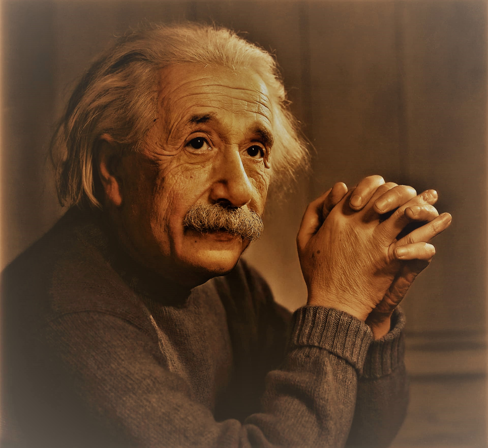

Albert Einstein: The Revolutionary Physicist (article heading)
Brief Biography of Work

Albert Einstein was a renowned theoretical physicist who developed the
theory of relativity, one of the two pillars of modern physics. His work
is also known for its influence on the philosophy of science. Einstein
is best known to the general public for his mass-energy equivalence
formula E = mc2. (Superscript)
In 1921, Einstein received the Nobel Prize in Physics (important) for
his services to Theoretical Physics (important) and his discovery of the
law of the photoelectric effect. This work was pivotal in establishing
the quantum theory.
Famous Quote
One of Einstein's most famous quotes reflects his views on curiosity and
learning:
I have no special talent. I am only passionately curious.
This quote encapsulates Einstein's humble nature and his belief in the
power of curiosity to drive scientific discovery and personal growth.
Growing Up
Growing Up Born on March 14, 1879, in (bold)
Ulm, Germany (bold), Einstein grew up in a secular Jewish
family. As a child, Einstein displayed an intense curiosity about nature
and an ability to understand complex mathematical concepts.
At the age of five, Einstein's father showed him a pocket compass, and
Einstein realized that something in "empty" (emphasized) space acted
upon the needle. This experience made a deep and lasting impression on
him.
Despite early speech difficulties, Einstein was a top student in
elementary school, particularly excelling in mathematics.
Personal Interests (bold all interest titles)
Einstein had several interests outside of his scientific work:
-
Music: He was an accomplished violinist and often played to
relax.
-
Sailing: He enjoyed sailing as a hobby and owned several
sailboats throughout his life.
-
Philosophy: Einstein was deeply interested in philosophy and
its relation to physics.
-
Pacifism: He was a committed pacifist and spoke out against
war.
-
Civil rights: Einstein was a strong supporter of civil rights
and racial equality.
Throughout his career, Einstein was associated with several prestigious
organizations:
- Swiss Patent Office:
- Worked as a patent clerk from 1902 to 1909
- University of Zurich:
- Served as a professor from 1909 to 1911
- Charles University in Prague:
- Held a full professorship from 1911 to 1912
- Prussian Academy of Sciences:
- Elected as a member in 1913
- Kaiser Wilhelm Institute for Physics:
- Served as director from 1917 to 1933
- Institute for Advanced Study in Princeton:
- Worked as a resident scholar from 1933 until his death in 1955
- Manhattan Project:
-
Although not directly involved, his work contributed to its foundation
- Emergency Committee of Atomic Scientists:
- Served as chairman after World War II
A Day in the Life of Einstein
Einstein's typical day during his time at the Institute for Advanced
Study in Princeton might have looked like this:
- Wake up and have breakfast
- Walk to the institute
- Work on mathematical problems and theories
- Have lunch with colleagues
- Continue work or attend meetings
- Take a walk to clear his mind
- Return home for dinner
- Play violin or read in the evening
- Reflect on the day's work before bed
Learn more about Albert Einstein by visiting:
The Nobel Prize website.